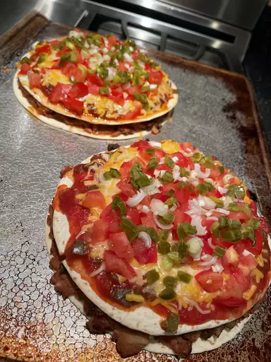

Mexican Pizza

Description
Craving Taco Bell? Skip the drive-thru and make this copycat Mexican pizza recipe at home.
Ingredients
- 1/2 pound ground beef
- 1 medium onion, diced
- 1 clove garlic, minced
- 1 tablespoon ground cumin
- 1/2 teaspoon paprika
- 1/2 teaspoon salt
- 1/2 teaspoon black pepper
- 1 (16 ounce) can refired beans
- 4 (10 inch) flour tortillas
- 1/2 cup salsa
Steps
- Cook the beef with onions and garlic, drain and season.
- Place a tortilla on each pie plate and top with refried beans.
- Cover with the beef, top with another tortilla, and bake until the tortillas are crisp.
- Layer the toppings in this order: Salsa, cheeses, tomatoes, green onions, and jalapeno.
- Bake until the cheese is melted. Cool, then cut each pizza into four slices.